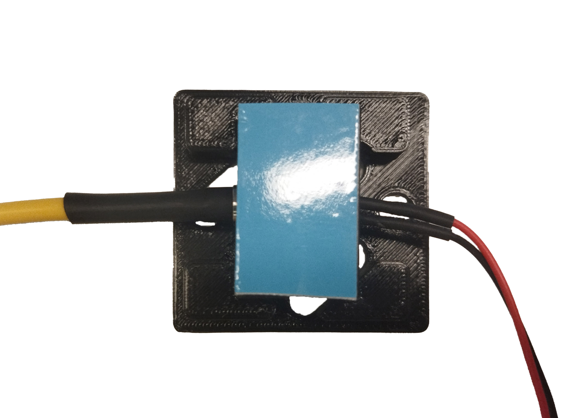
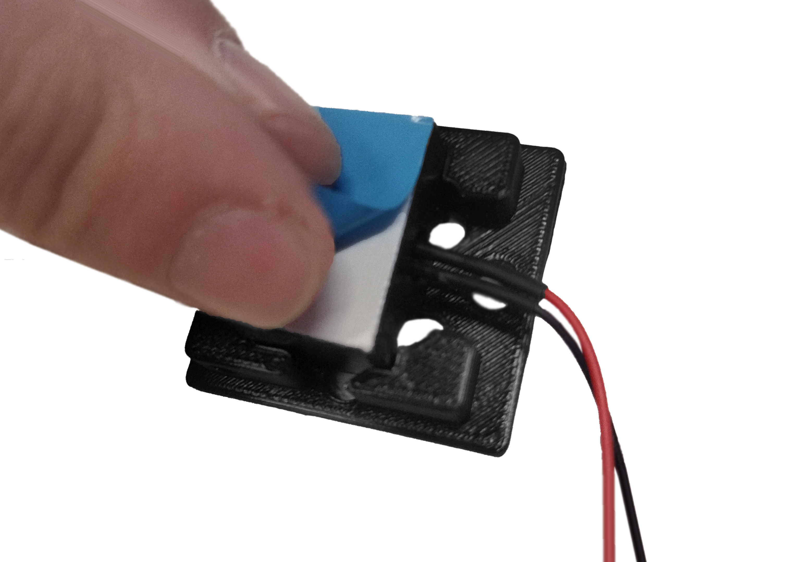
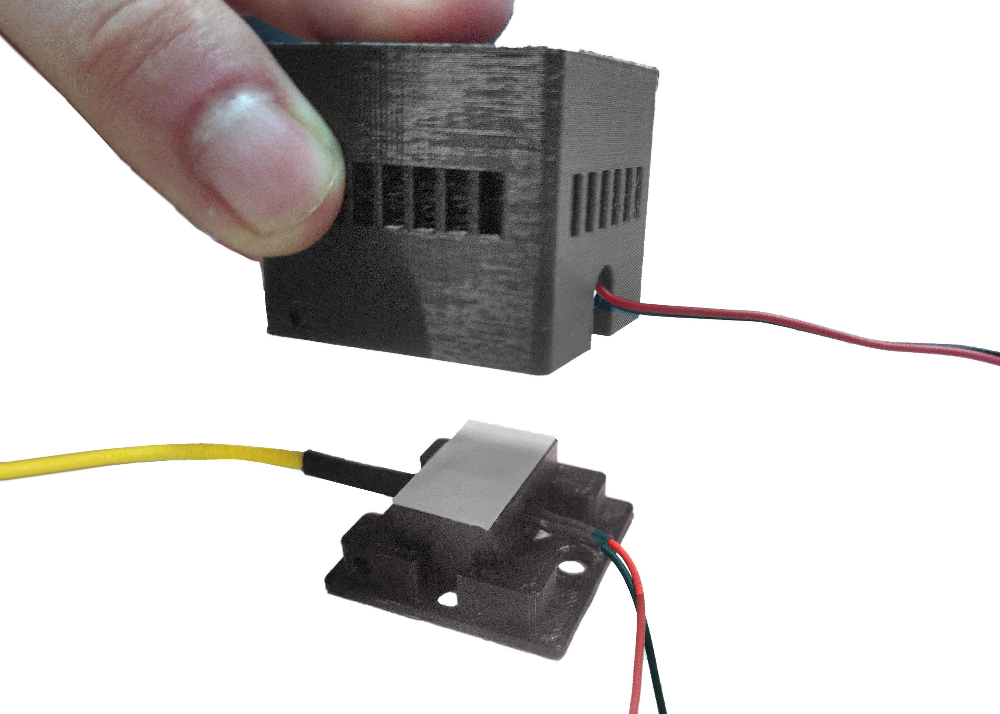
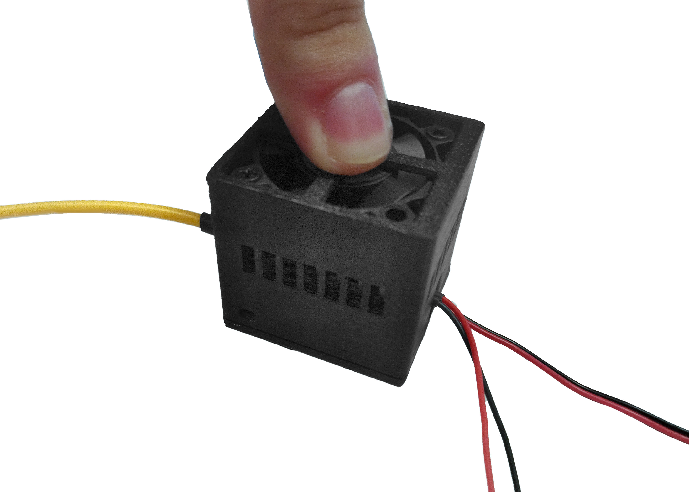
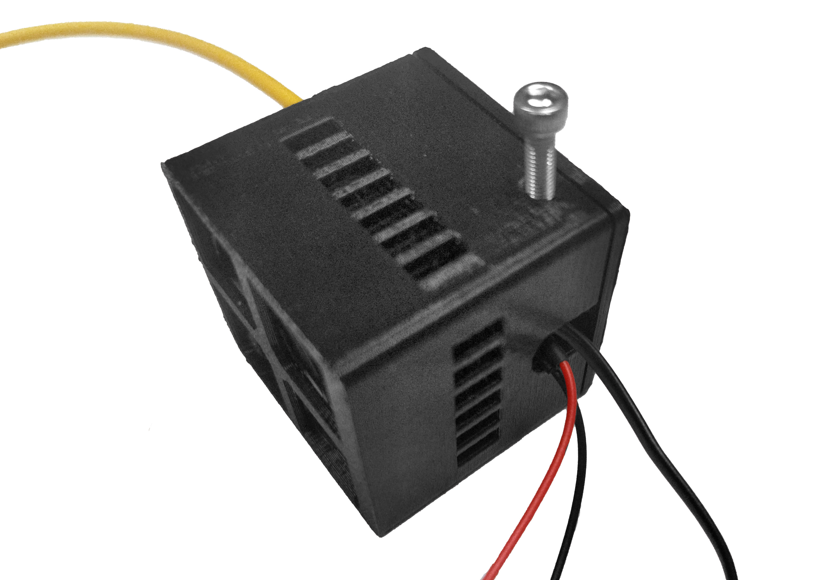
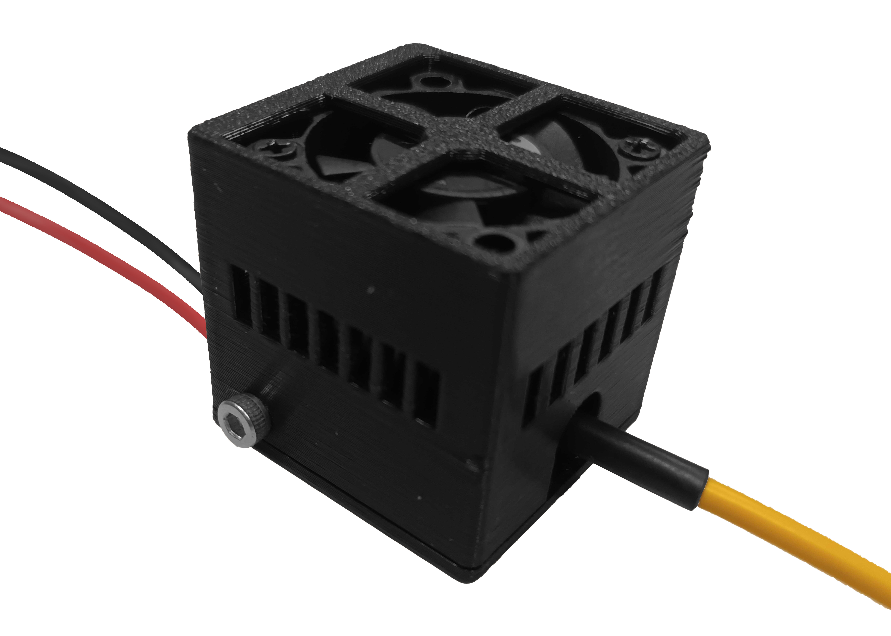

Módulo control de temperatura
Step 1: Acomplamiento disipador láser con la tapa
Posicionar y acoplar disipador de láser en la tapa sin torcer fibra para evitar daños.
Step 2: Pegado de cinta térmica
Pegar cinta térmica adhesiva en disipador de láser acoplado en la tapa.

Step 3: Acomplamiento ventilador con casing
Posicionar y acoplar el ventilador con disipador en el casing, teniendo cuidado de no aplastar los cables del ventilador.
Step 4: Ensamblaje final
Desprender capa azul de cinta térmica adherida al disipador del láser.

Acoplar “Casing Ventilación Láser” (con el ventilador previamente insertado) con “Tapa Ventilación Láser” (disipador y cinta térmica previamente unidos)


Atornillar pernos M3 de 10 mm para fijar ambas partes.

